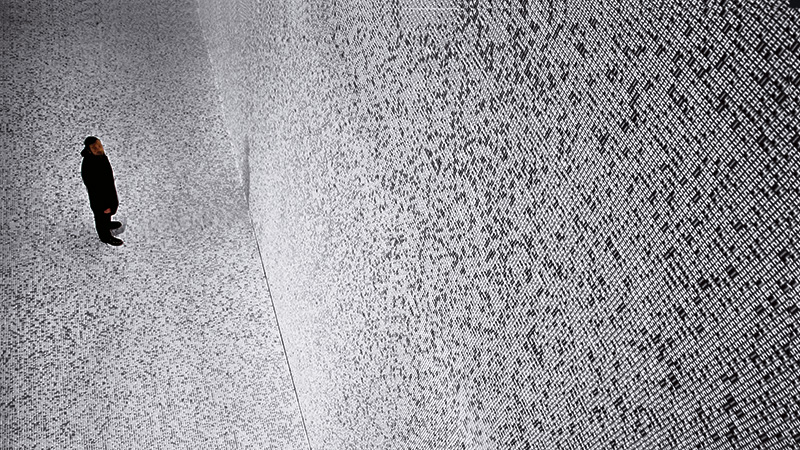
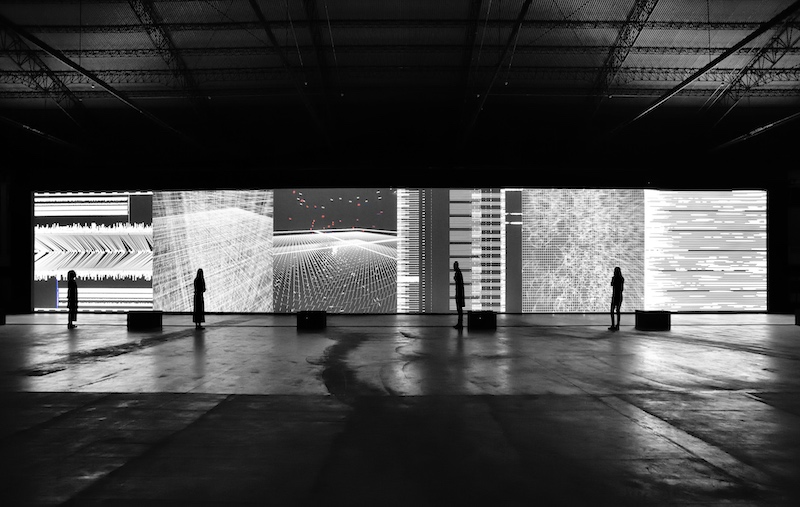
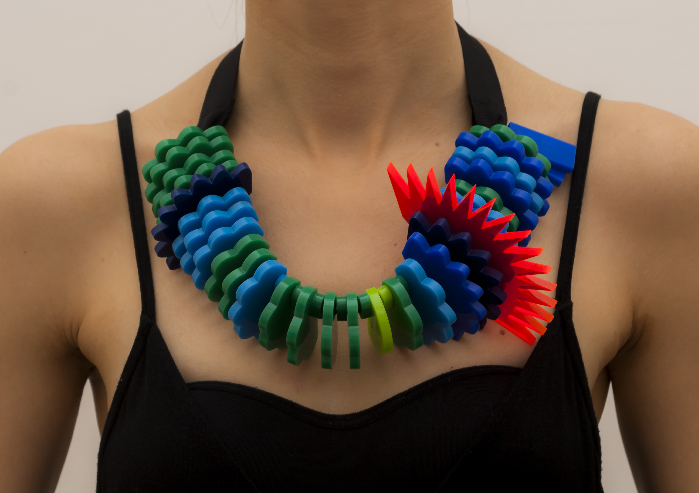
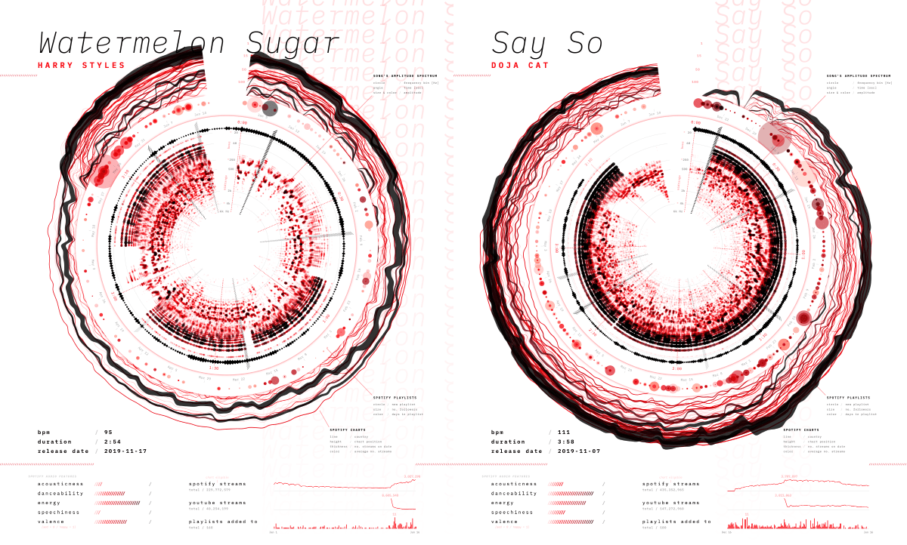
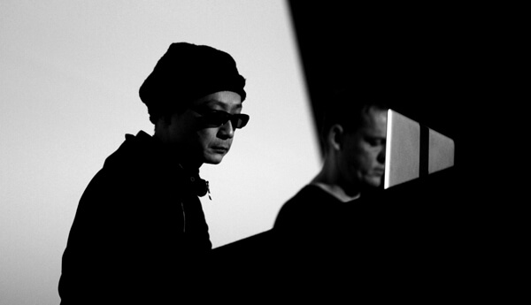
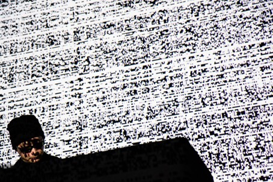
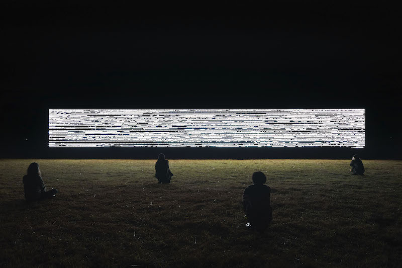
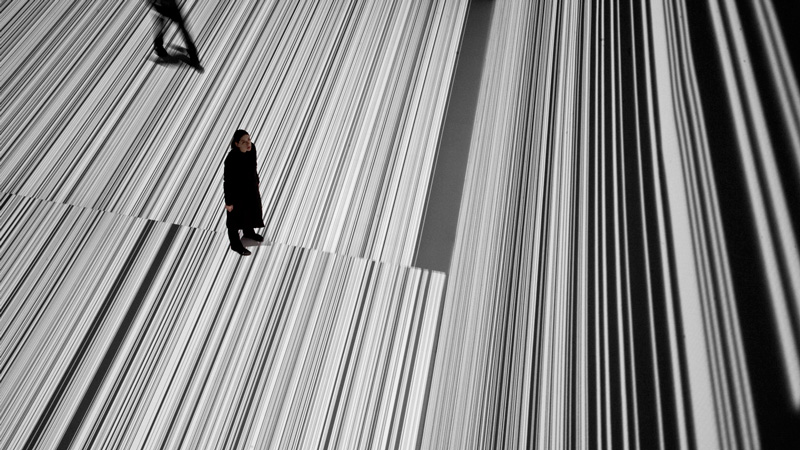
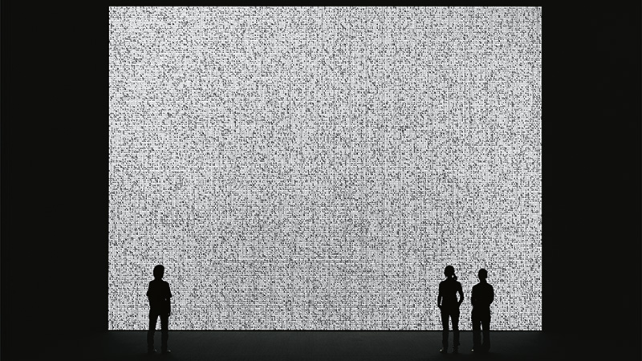

por fernanda contreras, josefina gutiérrez, dolores artigas, maria josé cordero, matilde rolle y antonia ilabaca.
data art: qué es?
   El Data Art es una páctica artística que utiliza conjuntos de datos para expresar emociones y comunicar verdades objetivas. A diferencia de la visualización de datos, este enfoque permite que los datos sean comprensibles y significativos para el público. Las obras pueden incluir no solo visuales digitales, sino también esculturas, sonificaciones (donde los datos se traducen en sonidos), composiciones de alimentos y olores. Esta versatilidad en el uso de datos no solo redefine lo que puede ser el arte, sino que también desafía las nociones tradicionales sobre la creación artística y el papel de la tecnología en nuestra vida cotidiana, ofreciendo continuamente nuevas perspectivas y caminos de exploración.
El desarrollo de la computación ha transformado el Data Art al permitir la manipulación de grandes volúmenes de datos y crear obras más abstractas y complejas, desafiando las nociones tradicionales de autoría. Esta integración tecnológica democratiza el acceso al arte y fomenta una reflexión crítica sobre la información, globalización y vigilancia. Al revelar patrones ocultos, el Data Art promueve la alfabetización crítica, empoderando a las personas para cuestionar la veracidad de los sistemas de datos, lo que lo convierte en un fenómeno que redefine el panorama artístico actual Ryoji Ikeda experimenta en diferentes formas de congregar a su audiencia en torno a la visualización, experimentando con lo visual y lo sonoro. Sin embargo, destacamos algunos artistas que utilizan este tipo de arte de otras formas.
ryoji Ikeda
 
Artista japonés de renombre internacional, conocido por su trabajo en el campo de la música electrónica, la instalación audiovisual y el “Data Art” (arte basado en datos). A través de su obra, explora la relación entre el sonido, el tiempo y el espacio, y combina elementos de ciencia, matemática y tecnología para crear experiencias inmersivas para el usuario.
Ikeda ha desarrollado una carrera muy influenciada por los avances tecnológicos y la intersección entre el arte y la ciencia. Utiliza datos como materia prima y traduce secuencias numéricas, códigos y algoritmos en experiencias visuales y sonoras. El enfoque minimalista y el uso de frecuencias sonoras extremas en su obra, invita a los espectadores a cuestionar su percepción del entorno.
datamatics
  "Datamatics" es una de sus series más influyentes y se centra en la visualización de grandes cantidades de datos de manera abstracta, incluye instalaciones, performances y publicaciones visuales. Utiliza datos científicos, numéricos y algorítmicos como base para crear un lenguaje visual y auditivo. Es una combinación de proyecciones visuales y composiciones sonoras cuya unión crea una experiencia inmersiva.
Datos como Materia Prima
Esta obra se basa en datos que normalmente no son visibles para el ojo humano, como partículas subatómicas, o bases de datos digitales. Al manipular estos datos, se crean imágenes y sonidos que representan la enormidad y complejidad de los sistemas invisibles que dan forma a nuestra realidad cotidiana, pero que no somos capaces de observar.
Ikeda utiliza los datos no solo como una herramienta estética, sino también como un medio para cuestionar la manera en que percibimos el mundo digital y científico. Su obra se enmarca en el Data Art, pero su enfoque es único en el sentido de que busca conectar lo invisible (el dato) con lo sensorial (la percepción humana).
proceso creativo
principios de lev manovich
transcodificación
Se escoge transcodificar por dos razones:
Para partir, transcodificar, por definición es traducir algo a otro formato. Esto es exactamente lo que logra Ikeda en su obra Datamatics.
En esta obra, el artista japonés, manipula datos de partículas subatómicas, o bases de datos digitales, es decir datos que nos son normalmente visibles para el ojo humano y logra crear imágenes y sonidos, convirtiendo información cruda en arte.
En segundo lugar, este medio, al ser digitalizado, adquiere una estructura dual, una capa informática, que sigue las reglas del procesamiento de datos de los ordenadores, en este caso las bases de datos que entrega Ikeda al sistema. Por otro lado, la capa cultural, que sigue las convenciones humanas, como las imágenes visuales.
El artista logra crear una experiencia inmersiva que mezcla los significados humanos con los informáticos. Representa la enormidad y complejidad de los sistemas invisibles que dan forma a nuestra realidad cotidiana, pero que no somos capaces de observar. Por lo que Ikeda utiliza los datos no solo como una herramienta estética, sino también como un medio para cuestionar la manera en que percibimos el mundo digital y científico.
La transcodificación no solo cambia los formatos, sino también los conceptos.
reflexiones finales
Ryoji Ikeda, en su proyecto Datamatics, nos demuestra cómo los datos invisibles pueden convertirse en arte, desafiando los límites de nuestra percepción sensorial.
Información abstracta en visualizaciones estroboscópicas y composiciones sonoras que crean una experiencia inmersiva y multisensorial.
Esta obra no solo es una exploración estética, sino también una reflexión sobre la magnitud de los sistemas invisibles que rigen tanto el mundo micro como el macro.
Subrayando el papel central que los datos pueden jugar en el diseño de proyectos innovadores y narrativos.